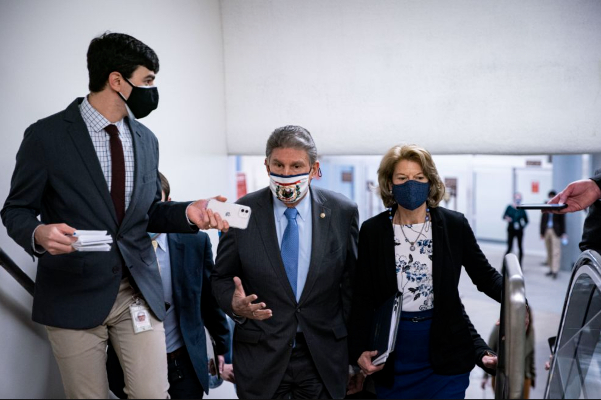
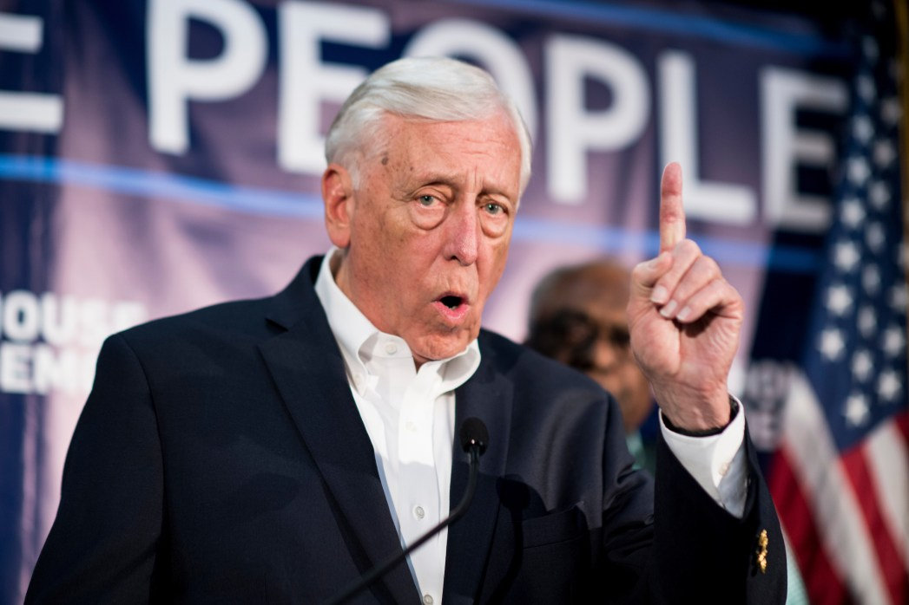
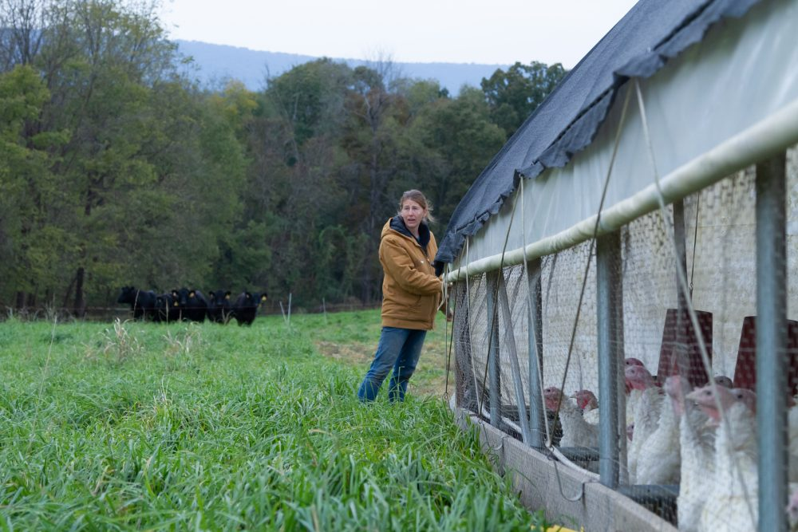
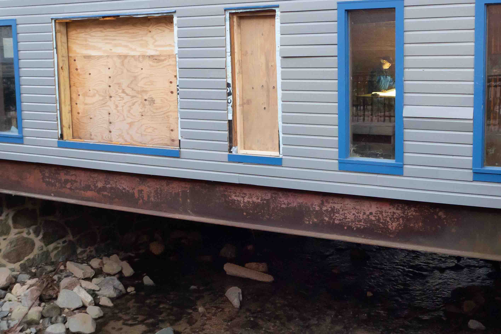
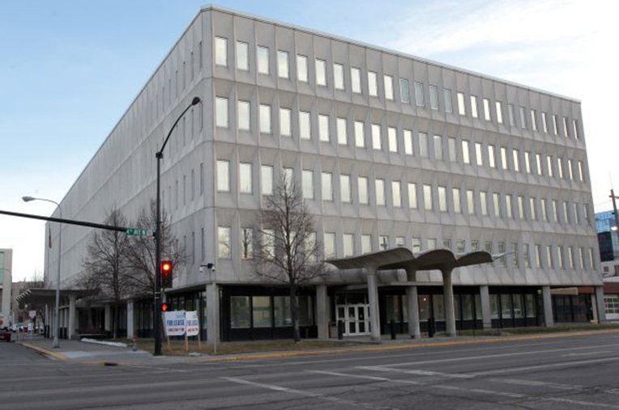

Welcome
My name is Chris Cioffi, and I am a congressional reporter at Roll Call in Washington, D.C.
I have worked for newspapers in three states, including Raleigh's News & Observer. I served terms of AmeriCorps in Montana and Alaska.
I graduated in 2018 with a master's degree from the University of Maryland in College Park. I specialized in data journalism.
If you like what you read, let's talk.

My Work
Where the money is: What fundraising in Phoenix and Tucson area says about the Arizona Senate raceA look at how, areas that donated to President Donald Trump donated to Arizona's 2020 Senate candidates.
My take: I worked with the Roll Call team to write code to pull Federal Elections Commission data through its API into R, break it down by zip code and group it geographically using U.S. Census data.
My take: I worked with the Roll Call team to write code to pull Federal Elections Commission data through its API into R, break it down by zip code and group it geographically using U.S. Census data.
Ties between a bank and Rep. Harold Rogers raise questions about PPP loans A bank where Rogers once served as a director provided millions in Paycheck Protection Loans to business owners.
My take: I used R to filter out the PPP loans made by the bank where Rogers used to sit on the board. Then, I went through each business and created a database of owners and stakeholders. Then I compared that to federal elections data.
My take: I used R to filter out the PPP loans made by the bank where Rogers used to sit on the board. Then, I went through each business and created a database of owners and stakeholders. Then I compared that to federal elections data.
Lawmakers still a long way from deciding what to preserve from insurrectionA comprehensive look at how lawmakers may want to preserve Capitol damage from the Jan. 6 riot. My take: After a pro-Trump mob stormed the Capitol on Jan. 6, lawmakers began to discuss what should be preserved from the event or if anything should be saved at all. I looked at the efforts and put them in historical context.

Grasswho? Members raised hundreds of thousands, almost none from small donorsLooking at how some Democrats, who tout small-dollar contributions as grassroots support, raised small sums that way.
My take: I cleaned and analyzed FEC data using the programming language R. The story is a summary of my findings and original reporting on how some lawmakers drift away from small-dollar donations.
Cherry blossoms in winter? Global warming could make it happen A data-driven story on how warming temperatures would likely mean earlier blooms. My take: I used R to help tell a story about how earlier blossoming cherry trees could cause some scheduling snafus for organizers of the National Cherry Blossom Festival. I used R to create a graphic for the piece that showed, historically, when the festival and peak bloom occurred.

Chesapeake farmers target runoff reduction, lawmakers seek conservation funds A story about Chesapeake Bay conservation program funding levels in the new farm bill.
My take: Two Carto maps were created by joining shapefiles with USDA data in R. The third, about zip codes in Maryland receiving federal funds, was created with data I scraped from the web using the Rvest library. Graphs are built in D3.
My take: Two Carto maps were created by joining shapefiles with USDA data in R. The third, about zip codes in Maryland receiving federal funds, was created with data I scraped from the web using the Rvest library. Graphs are built in D3.
 DC Is Planting Thousands of Trees, But Inequity RemainsHistorically D.C. provided more maintenance to affluent parts of the city, but that's slowly changing.
DC Is Planting Thousands of Trees, But Inequity RemainsHistorically D.C. provided more maintenance to affluent parts of the city, but that's slowly changing. My take: I analyzed the D.C. Tree Inventory with R to see where D.C. trees are planted. Then, I mocked up graphics of my findings and worked with the NBC graphics team to build visuals using Carto and DataWrapper.

With new plan on pause, Ellicott City business owner feels stuckA plan to buy and demolish 10 buildings on Main Street was put on hold, and that’s frustrated some business owners.
My take: I used an R library developed by the USGS to analyze data collected at area stream gauges. I also built two graphics: a GIF I created using QGIS and Photoshop, and another that I built using C3. I took all the photos too.
My take: I used an R library developed by the USGS to analyze data collected at area stream gauges. I also built two graphics: a GIF I created using QGIS and Photoshop, and another that I built using C3. I took all the photos too.
 Their water is contaminated, and Wake residents want help The story looks at fouled wells in a Wake area surrounded by city, but without municipal services.
Their water is contaminated, and Wake residents want help The story looks at fouled wells in a Wake area surrounded by city, but without municipal services. My take: The citizen initiative first popped up in county commission meetings. I researched area history in both city and N&O archives. I examined county and EPA records, and interviewed residents.
 2 years and counting: Crane marks spot of project in limbo An investigation into why a 7-story apartment building never got built. My take: After driving by the crane many times, I finally decided to figure out why it hardly moved. Doing that required me to untangle a web of court documents, file an information request and interview neighbors.
2 years and counting: Crane marks spot of project in limbo An investigation into why a 7-story apartment building never got built. My take: After driving by the crane many times, I finally decided to figure out why it hardly moved. Doing that required me to untangle a web of court documents, file an information request and interview neighbors.

Empty federal building a 'big white elephant sitting downtown' The James F. Battin Federal Building was sold by the GSA to Washington-based Colorado Tire Corp. Years later, it's still empty.
My take: I searched court records in several states, state and nonprofit databases, and looked through federal filings to track down the company and some of its mysterious activities.
My take: I searched court records in several states, state and nonprofit databases, and looked through federal filings to track down the company and some of its mysterious activities.
 Senior Citizens in the oil patch can't afford rent Some senior citizens living in the oil-boom town of Sidney were paying more in rent than people in New York City.
Senior Citizens in the oil patch can't afford rent Some senior citizens living in the oil-boom town of Sidney were paying more in rent than people in New York City.My take: While reporting on other stories, I met people commuting several hours for work in the oil patch because they couldn't find housing. I used U.S. Census data and interviews to tell readers about the area's high rents.
Skills
Education
-
M.J. Master of Journalism — Computational and Data Focus
2018
University of Maryland, College Park
-
Certificate Technology and Communication
2016
University of North Carolina, Chapel Hill, N.C.
-
B.A. Language, Writing and Rhetoric
2011
North Carolina State University, Raleigh, N.C
Experience
Congressional Reporter
Roll Call, Washington | Jan. 2019 - present
Write CQ Senate newsletter, news stories and features for one of the most trusted sources on Capitol Hill; Interview members of Congress; Analyze data; Promoted from online editor.
Adjunct Instructor
University of Maryland, College Park, Maryland | Aug. 2021 - present
I teach a media graphics course focused on design fundamentals and hands-on design and production of various forms of visual communication, including infographics and websites.
Digital Editor and Reporter (part-time)
WTOP News, Washington | May 2018 - Jan. 2019
Developed and wrote local news; Edited and compiled articles from reporters; Built multimedia content; Selected wire copy while managing the WTOP website.
Reporter
Capital News Service, Washington | Aug. 2018 – Dec. 2018
Covered Maryland’s congressional delegation; Used SQL, R, QGIS and others to write data-driven stories on Maryland issues.
Intern
NBC Washington, Washington | June 2018 - August 2018
Conduct interviews and write news for NBCWashington.com and the NBC Washington app; Cut and upload videos from broadcasts, build online photo galleries and take photos; Provide support to the digital team.
Graduate Assistant
University of Maryland School of Public Health Dept. of Communication, College Park, Maryland | July 2017 - Dec. 2018
As Department of Communications’ graduate assistant, helped the team write press releases and web stories; Managed the website; Collected photos and edited video.
General Assignment ‘Real Time’ Reporter
The News & Observer, Raleigh, North Carolina | Mar 2016 - June 2017
Used social media to write stories for North Carolina’s Pulitzer Prize-winning newspaper; Took photos, video; Covered the 2016 election cycle; Promoted from North Raleigh reporter.
Cops and Courts Reporter
Lynchburg News & Advance, Lynchburg, Virginia | May 2015 – March 2016
Monitored and covered criminal, civil and federal courts in five counties and in Lynchburg; Identified and wrote stories about crime trends; Promoted from Bedford County reporter.
General Assignment Reporter
Billings Gazette Communications, Billings, Montana | Sept. 2013 - May 2015
Covered Montana State University in Billings; Assisted with courts and metro coverage and breaking news; Took photographs and video.
AmeriCorps, Billings, Mont. & Fairbanks, Alaska
Self Help Law Center, Jan. 2013 - Sept. 2013; Youth Development Coordinator, Jan. 2012 - Dec. 2012
Managed free legal program; Trained volunteers; Wrote grants; Built teaching garden.
Internships
NBC Washington, Washington, D.C.
Digital Intern, Summer 2018
WUNC North Carolina Public Radio, Chapel Hill, North Carolina
The Story with Dick Gordon Intern, Summer 2011; News Intern, Summer 2011